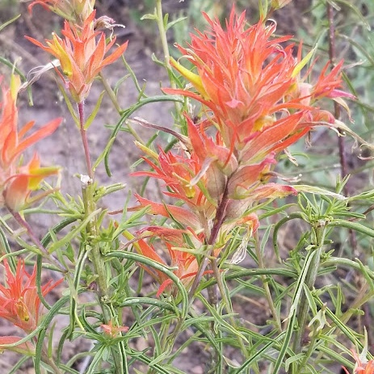
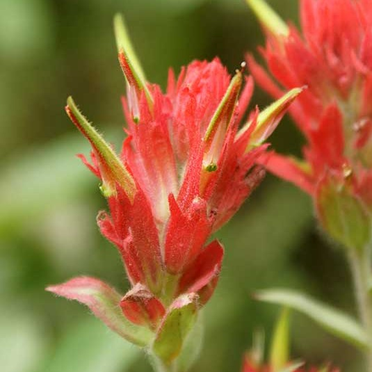

Castilleja linariifolia
- Common name
- Wyoming Paintbrush
- Family
- Orobanchaceae
- Family common name
- Broomrape Family
- Blooms
- May - October
- Habitat
- Dry, rocky sites, plains, sagebrush, juniper forests, at mid- to high-elevations.
- Inflorescence color
- Bright red, orange, or yellow.
- Stature
- 12 - 40". Erect, gray-green foliage becoming purplish, hairless or slightly hairy. Stems with few branches.
- Leaves
- Linear, edges rolled upwards, entire or rarely with upper leaves 3-lobed.
- Florets
- Flower bracts 1/3 - 1 in., generally divided into 3 narrow lobes, bright red, orange, or yellow; calyx unevenly divided, more deeply cut in front, red, more noticeable than bracts. Corolla yellow-green with red edges.
- Wyoming state flower
Range Map
OR Flora